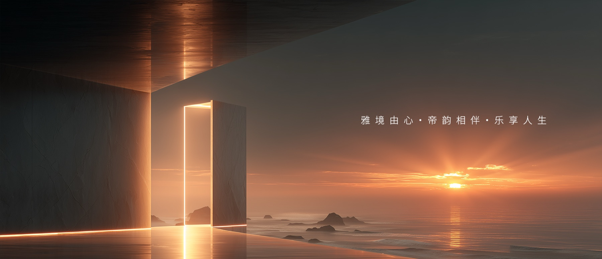
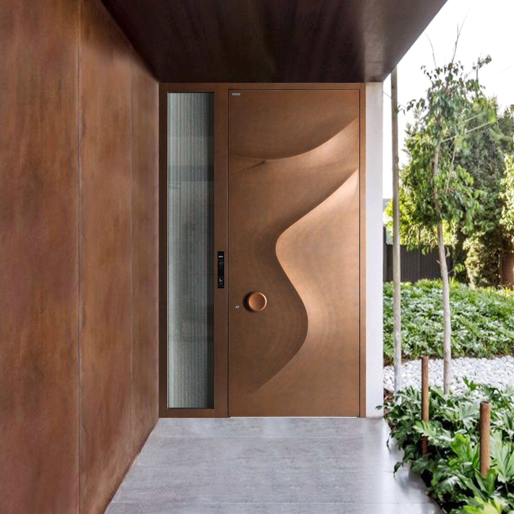

预约与测量
联系全国门店，确认门洞条件、开启方向与使用需求。

HENG · K80 / 2026 PRIVATE COLLECTION
从系统结构到表面细节，雅帝乐以可被长期验证的精密制造，完成家的第一道风景。
01 / PRODUCT DIRECTORY
每款产品都保留来自 2026 产品目录的款式名称、风格语汇与结构说明。先查看产品详情，确认具体产品后再进入它的独立定制页面。
CATALOGUE

03 / SERVICE
以门店为服务节点，以测量、深化、制造和安装为一条完整链路，确保线上方案回到真实建筑时仍然成立。
联系全国门店，确认门洞条件、开启方向与使用需求。
由门店与设计团队共同校核门型、纹理、五金和结构尺寸。
工厂闭环生产，现场完成复尺、安装、调试与服务交付。